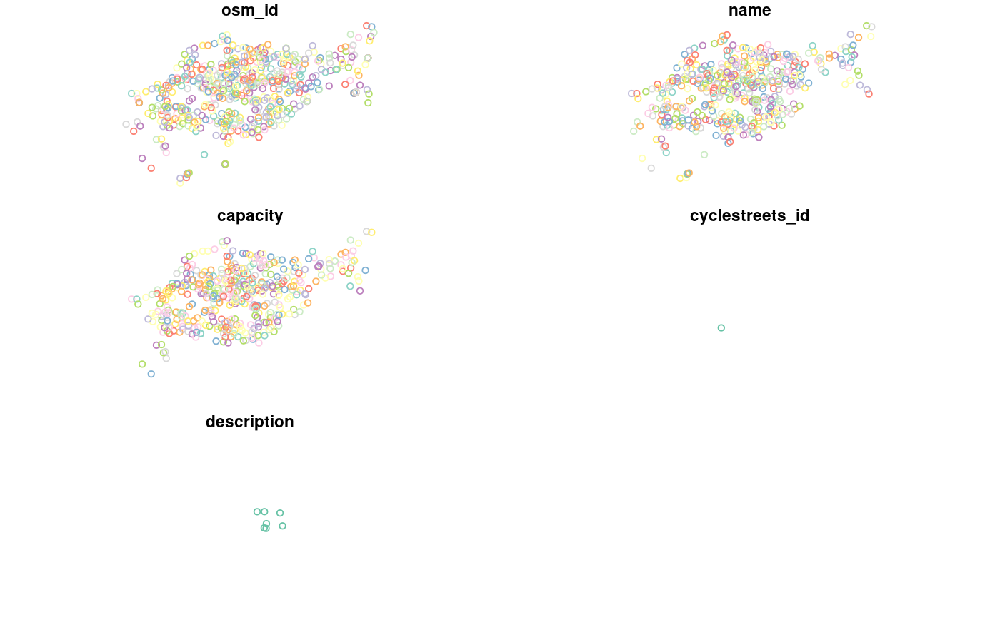

Dataset downloaded using the osmdata package representing cycle hire points accross London.
cycle_hire_osm
osm_id The OSM ID
name The name of the cycle point
capacity How many bikes it can take
cyclestreets_id The ID linked to cyclestreets' photomap
description Additional description of points
geometry sfc_POINT
See the osmdata package: https://cran.r-project.org/package=osmdata
library(sf) data(cycle_hire_osm) # or cycle_hire_osm <- st_read(system.file("shapes/cycle_hire_osm.geojson", package="spData"))#> Reading layer `OGRGeoJSON' from data source `/home/jn/Documents/spData/inst/shapes/cycle_hire_osm.geojson' using driver `GeoJSON' #> Simple feature collection with 532 features and 5 fields #> geometry type: POINT #> dimension: XY #> bbox: xmin: -0.229123 ymin: 51.45927 xmax: -0.0079843 ymax: 51.54683 #> epsg (SRID): 4326 #> proj4string: +proj=longlat +datum=WGS84 +no_defsplot(cycle_hire_osm)# Code used to download the data:# NOT RUN { library(osmdata) library(dplyr) library(sf) q = add_osm_feature(opq = opq("London"), key = "network", value = "tfl_cycle_hire") lnd_cycle_hire = osmdata_sf(q) cycle_hire_osm = lnd_cycle_hire$osm_points nrow(cycle_hire_osm) plot(cycle_hire_osm) cycle_hire_osm = dplyr::select(cycle_hire_osm, osm_id, name, capacity, cyclestreets_id, description) %>% mutate(capacity = as.numeric(capacity)) names(cycle_hire_osm) nrow(cycle_hire_osm) # }